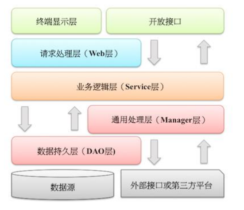

外部接口或第三方平台：包括其它部门RPC开放接口，基础平台，其它公司的HTTP接口。
【参考】（分层异常处理规约）在DAO层，产生的异常类型有很多，无法用细粒度的异常进行catch，使用catch(Exception e)方式，并throw new DAOException(e)，不需要打印日志，因为日志在Manager/Service层一定需要捕获并打印到日志文件中去，如果同台服务器再打日志，浪费性能和存储。在Service层出现异常时，必须记录出错日志到磁盘，尽可能带上参数信息，相当于保护案发现场。如果Manager层与Service同机部署，日志方式与DAO层处理一致，如果是单独部署，则采用与Service一致的处理方式。Web层绝不应该继续往上抛异常，因为已经处于顶层，如果意识到这个异常将导致页面无法正常渲染，那么就应该跳转到友好错误页面，加上用户容易理解的错误提示信息。开放接口层要将异常处理成错误码和错误信息方式返回。
【参考】分层领域模型规约：